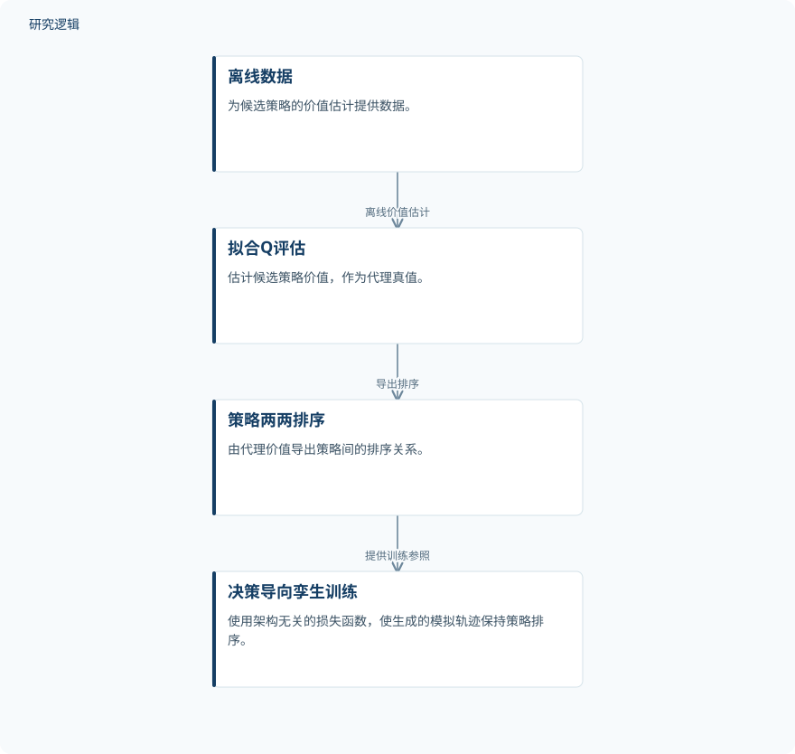

摘要解读
DT²：面向决策目标的数字孪生
$\textDT^\text2$: Decision-Targeted Digital Twins
解读更新 2026-11-10 12:11 · 依据公开摘要整理，未核验全文细节
数字孪生模拟得准确，是否就能帮助选对策略？DT²聚焦这两种目标之间的差距：让模型训练直接服务于策略排序，而不只是降低单步预测误差。其阅读价值在于重新审视数字孪生的评价标准——还原系统行为与支持决策，并不是同一个问题。
文章目录
预测下一步，不等于选对策略
数字孪生通过模拟不同策略引发的系统情景，为现实决策提供参考。但摘要指出，常见的机器学习数字孪生并未直接围绕这一用途优化：训练关注单步状态转移误差，使用时却需要依据奖励函数判断哪些策略更好。
作者证明，当模型容量有限时，最小化单步转移误差可能得到不利于策略排序的模型。摘要还报告，即使采用表达能力较强的模型类别，经验研究中仍能观察到这种问题。因此，提升预测能力本身，并不能替代对决策目标的直接考察。
用离线价值估计引导孪生训练
DT²首先使用拟合Q评估（fitted Q-evaluation），从离线数据估计候选策略的价值。这些估计充当代理真值，而不是直接获得的真实策略价值；后续训练以其导出的策略两两排序为参照。
接着，数字孪生通过一种与模型架构无关的损失函数进行训练，使生成的模拟轨迹保持上述策略排序。方法的关键是将训练目标对准策略之间的优劣关系，而不只是局部状态预测是否接近观测。
依据摘要整理的DT²训练过程


概括离线价值估计到决策导向孪生训练的关系，仅为摘要示意，不是论文原图。
下载 SVG图示关系说明
实线表示相邻阶段的信息流，虚线表示跨阶段联系或反馈。
离线数据 → 拟合Q评估：离线价值估计；拟合Q评估 → 策略两两排序：导出排序；策略两两排序 → 决策导向孪生训练：提供训练参照
排序与选择改善，模拟保真度仍被保留
摘要报告，作者在多种设置和模型架构下进行了经验评估。相较传统数字孪生训练，DT²持续改善策略排序，并降低策略选择时的决策遗憾；这一结果同时覆盖训练中使用的策略和未见策略。
与此同时，摘要称该方法仍保持了良好的原始模拟保真度。这表明作者报告的收益并非仅限于排序指标，但摘要未给出保真度的具体衡量方式，也不足以判断它与决策收益之间的定量权衡。
摘要尚不足以界定收益边界
本解读仅依据所提供的完整摘要。摘要未列出数据集、独立样本数量、具体任务与架构清单，也未说明传统训练基线的完整配置、指标数值及统计不确定性，因此无法判断改善幅度与比较的充分性。
代理价值估计的准确性如何影响排序、未见策略与训练策略相差多远，以及结果是否经过真实系统验证，也无法由摘要确定。这些是进一步阅读时需要核对的信息，不能据此认定论文没有开展相关分析。
阅读启发：先明确孪生要支持什么决策
阅读启发：对于希望用数字孪生比较运维策略的读者，可以先区分“模拟是否逼真”和“策略是否选对”两类问题，再关注奖励函数如何定义、离线数据是否足以支撑候选策略的价值评估。这里是应用阅读视角，不代表摘要已验证智能运维场景中的效果。
建议进一步阅读时重点追问：代理价值排序的可信度如何检验？排序改善与模拟保真度如何共同评价？这些问题直接来自方法对代理真值和决策目标的依赖，有助于判断其适用条件，而不是预设它能替代所有传统孪生训练。
以上为本站阅读启发与建议，不是论文已验证的结论。